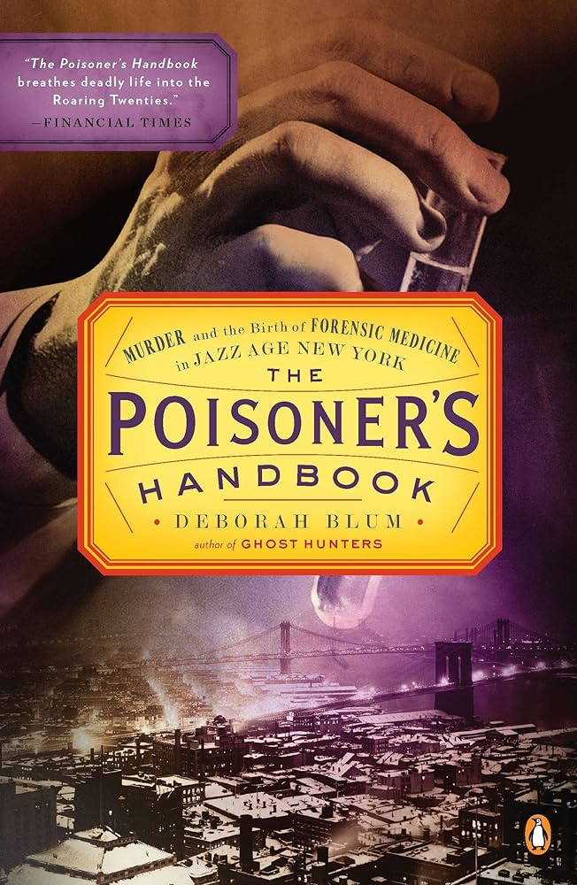
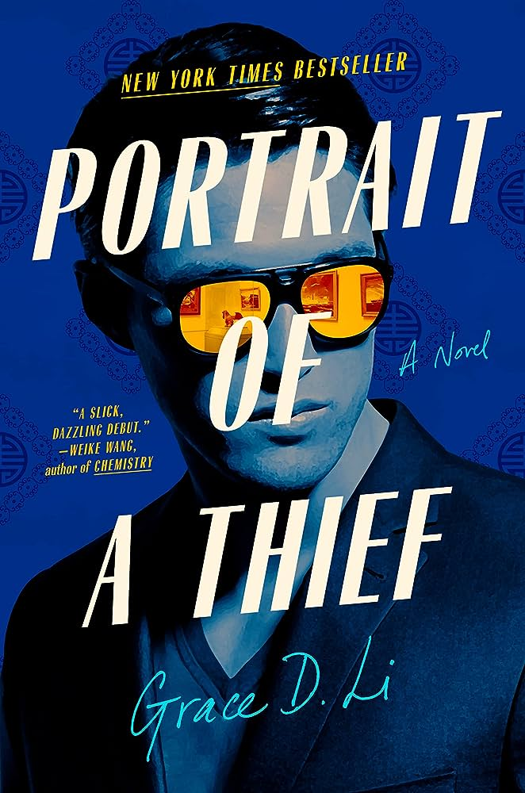
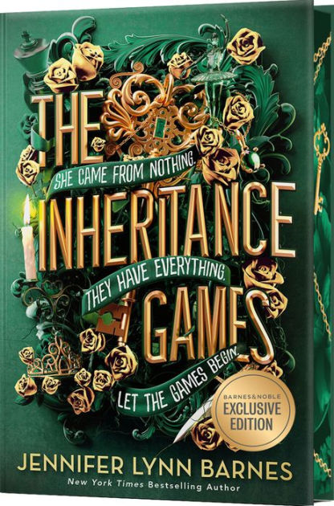

The Poisoner's Handbook
by Deborah Blum
Rating
5/5 hearts
Tags
Summary
This book details the lives and work of Dr. Charles Norris and Dr. Alexander Gettler and their contributions to the rise of forensic science as a field. Told through gripping tales of grisly murders, this book was science and true crime to give life to the struggles of these men in Prohibition-era New York City and how they built a name for forensic science.
Final Thoughts
This book altered me as a person. It reads like fiction and satisfies several of my niche special interests, like forensic science, murder mystery, drama, history, and forensice science. While I respect the work of Dr. Norris in this book, I have nothing but love for the father of toxicology, Alexander Gettler, whose work is relevant and fascinating to this day.
Portrait of a Thief
by Gracie D Li
Rating
4/5 hearts
Tags
Summary
Will is about to graduate, and he doesn't know what he's going to do with his life. Then, his life is turned upside down when he's offered a heist job to return stolen Chinese art to its rightful location. With $50 million at stake, are Will and his band of undergrads up to the task? Or will they destroy their futures chasing the past?
Final Thoughts
This book was both entertaining and thought-provoking. It realistically portrays college students and how they struggle to reconcile conflicting identities. I would read this again.
The Inheritance Games
by Jeniffer Lynn Barnes
Rating
4/5 hearts
Tags
Summary
17 year old Avery has a deadbeat dad, a dead mom, and lives with her half sister. Avery works to get by, and she has a plan to use her intelligence to get to college. All that changes when Avery is named the inheritor of late billionaire Tobias Hawthorne over his own family. Now forced to live in a mansion with said family, Avery must unite Tobias's estranged grandsons in order to unravel the mystery of Avery's inheritance, but family secrets and violence threatens them at every step.
Final Thoughts
"A very risky gamble." If you know, you know. A fast, fun, exciting read, perfect to break someone out of a book slump or dry spell.